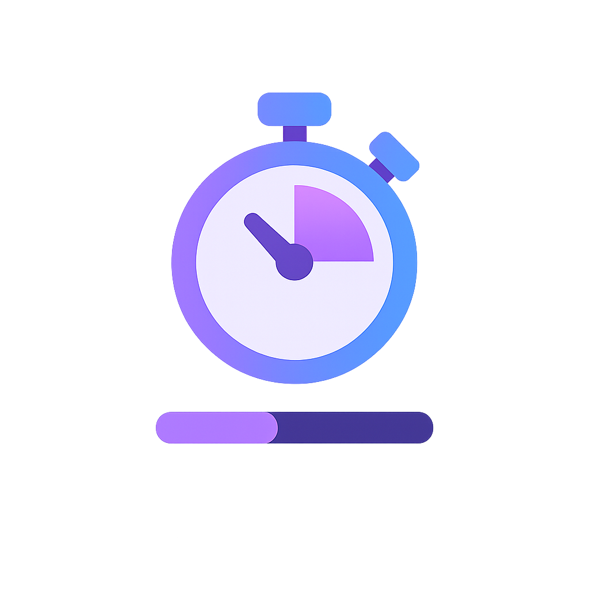

Nouveau
Préparez vos entretiens simplement
Entraînez-vous sur des questions ciblées, suivez votre progression et gagnez en confiance avant vos entretiens.
Simulation rapide
Entraînement guidé
- Questions orales ou écrites
- Timer ajustable
- Statistiques simples

Fonctionnalités
Pratique guidée
Choisissez une catégorie, un nombre de questions et lancez une session chronométrée.
Banque organisée
Filtrez par thème ou difficulté et ajoutez vos notes personnelles sur chaque question.
Suivi simple
Visualisez vos scores moyens et l'historique de vos sessions enregistrées.
Témoignages
Lina, étudiante
"Les simulations m'ont aidée à structurer mes réponses et à gérer le stress."
Thomas, alternant
"J'aime la banque de questions et les notes que je peux garder pour chaque sujet."
Camille, junior dev
"Le suivi des sessions m'a permis de voir mes progrès en quelques jours."